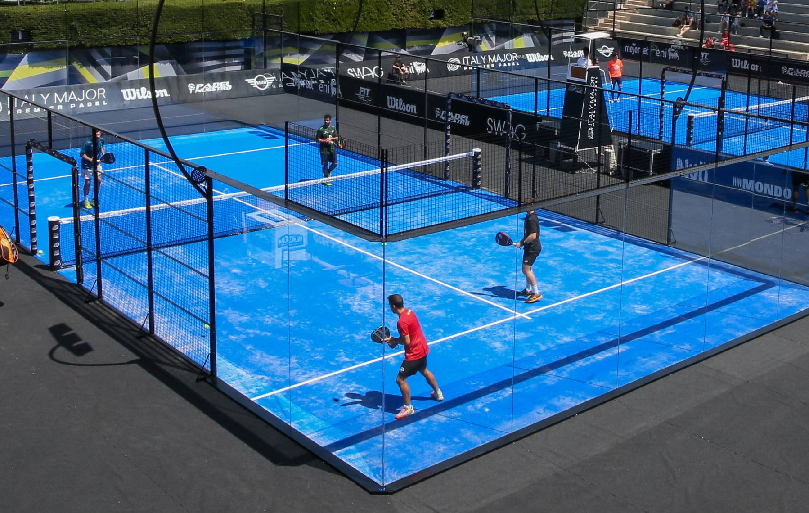

Padel on vauhdikas ja helposti omaksuttava mailapeli, joka yhdistää tenniksen ja squashin parhaita puolia. Laji on kehitetty 1960 - luvulla Meksikossa, mutta sen suosio on kasvanut erityisesti 2000‑luvulla, ja siitä on tullut yksi Euroopan nopeimmin leviävistä urheilumuodoista. Suomessa padel on vakiinnuttanut asemansa niin harrastajien kuin kilpailijoiden keskuudessa.
Padelia pelataan yleensä nelinpelinä, mikä tekee siitä sosiaalisen ja helposti lähestyttävän lajin. Kenttä on tenniskenttää pienempi ja sitä ympäröivät lasi- ja metalliseinät, joita saa hyödyntää pelin aikana. Tämä tuo peliin dynaamisuutta ja mahdollistaa pidemmät pallorallit.

Padelmaila on lyhytvartinen ja reikäinen mikä tekee siitä helppokäyttöisen myös aloittelijoille. Pallo muistuttaa tennispalloa, mutta on hieman vähemmän paineistettu, jotta se sopii lajin tempoon ja kentän rakenteeseen.

Padel sopii lähes kaikille ikään tai taitotasoon katsomatta. Lajin aloittaminen ei vaadi aiempaa mailapelitaustaa, ja pelin perusasiat oppii nopeasti.

Padelin suosio perustuu sen helppouteen, yhteisöllisyyteen ja pelin nopeatempoiseen luonteeseen. Laji tarjoaa onnistumisen kokemuksia jo ensimmäisistä pelikerroista lähtien, ja sen voi aloittaa ilman suuria varustehankintoja.